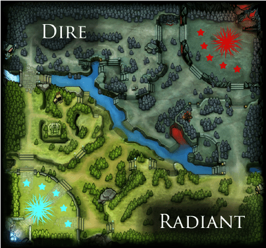
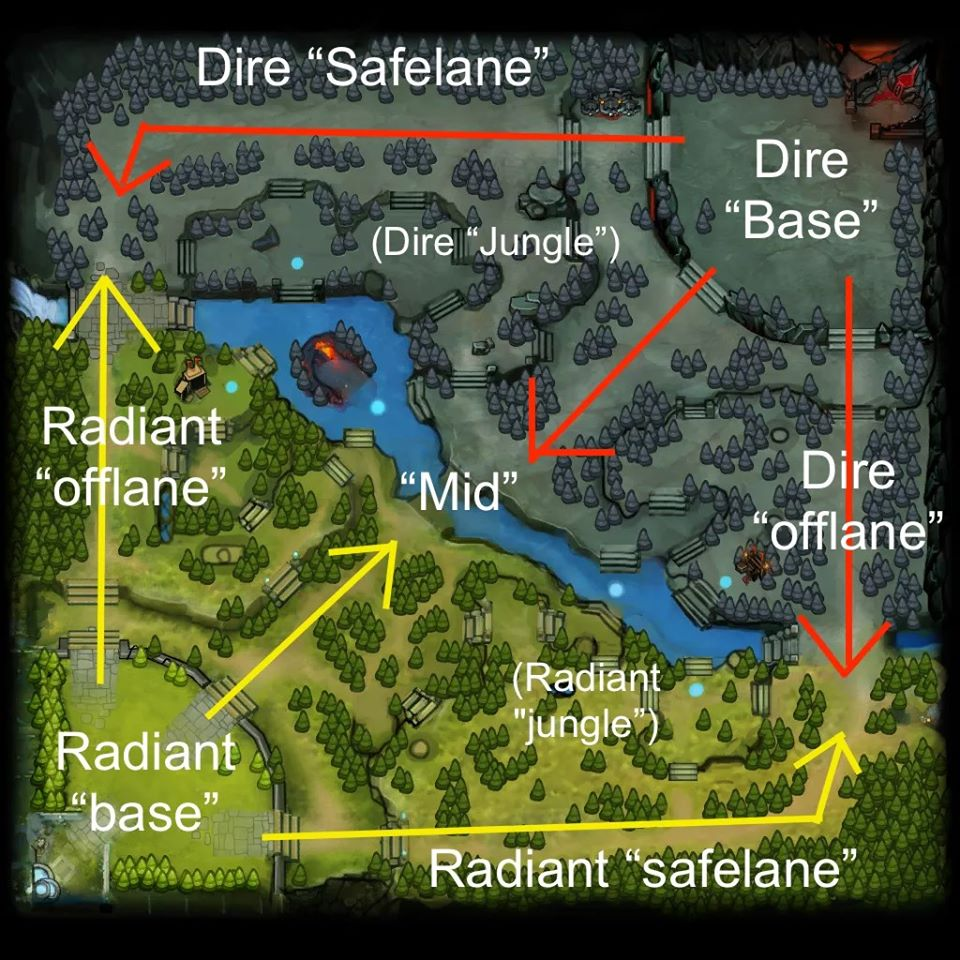

VIdeojuego creado por: VALVE.
VER: INTRODUCCION HEROES OBJETOS UNIDADES CAMPO DE BATALLA ROLES y/o POSICIONES
Dota 2 es un videojuego perteneciente al género de Arena de batalla en línea ARTS, también conocido como MOBA, Multiplayer Online Battle Arena, lanzado el 9 de julio de 2013 y desarrollado por la empresa Valve Corporation. Actualmente es el deporte electrónico más jugado de la plataforma de Steam con más de 40.6 millones de players únicos que se conectan casi en su totalidad con frecuencia diaria, por lo que llegó al “Guinness World Records Gamer's Edition”.
En este, dos equipos de cinco jugadores tienen el objetivo de destruir las estructuras del rival. Para hacerlo controlarán a personajes denominados héroes que tienen diferentes habilidades que los distingue: fuerza, agilidad o inteligencia. Deberán recorrer un mismo mapa, el cual tiene dos lados: Radiant y Dire, y tres carriles en donde también se enfrentarán a “unidades no controladas”, criaturas neutrales que intentarán obstaculizar el avance de los jugadores.
Se puede elegir entre 122 héroes, lo que permite bastante flexibilidad a la estrategia seleccionada. De todas formas, la desarrolladora lanza parches que intentan balancear el juego y evitar abusos de ciertas estrategias por parte de los diferentes jugadores “tóxicos”.
En cuanto a los jugadores, se destaca Azel Abed Yusop, de 16 años, de Filipinas. Actualmente, es jugador profesional de Dota 2 en Evil Geniuses y fue el primero en alcanzar la cifra de 10K de MMR en las tablas de clasificación mundiales del MOBA de Valve. También al player argentino Nicolás Wij Moreno de la organización SG Esports, que en 2017 se convirtió en el primer team brasileño en disputar un Major. El jugador rosarino participó en el Mundial del año pasado como uno de los tres representantes de la región junto a otro plantel.
Valve organiza de manera anual el campeonato mundial “The International”, que en su primera edición fue jugado en la ciudad de Colonia, en Alemania. En 2015, en Estados Unidos, repartió más de 18 millones de dólares y en la siguiente se entregaron más de 20. Actualmente es el torneo de e-sports anual que más dinero otorga en premios. También otras competencias importantes que organiza la empresa estadounidense son los Majors: se realizan tres veces al año con premios acumulados de hasta tres millones de dólares.
Perú estuvo cerca, pero el Major de Estocolmo de Dota 2 se lo quedó OG, bicampeones del International y quíntuples campeones de un Major. “DOTA 2 en Perú es casi como el fútbol en Argentina. Tiene muchos fanáticos y seguidores. Existe una cultura muy Dotera. Hay muchísimos jugadores a nivel mundial que son peruanos. Perú tiene dos slots para el Mundial de DOTA y Mobile Legends también va por ese camino. Lo tiene que ir construyendo, pero sé que estadísticamente tiene más de un millón de jugadores activos”, dijo en exclusiva al medio especializado en esports y streaming PEEK Latam Charly González, CEO del equipo argentino Malvinas Gaming, que se convirtió TOP 2 de Latinoamérica.
Son los héroes del escenario personalizado Defense of the Ancients quienes por sus atributos primarios y habilidades son diferentes unos de otros, esto hace que su modo de juego y poderes sea distinto en cada uno de ellos.
Estrategas de la magia, feroces bestias, astutos pícaros... El conjunto de héroes de Dota 2 es enorme y de una diversidad ilimitada. Lanza increíbles hechizos y devastadoras habilidades definitivas en tu camino hacia la victoria.
A lo largo de los años, ha habido héroes que han aumentado o disminuido su popularidad a medida que el meta cambiaba. Pero sólo unos pocos han sido elegidos y prohibidos durante largos períodos de tiempo o han sido de vital importancia para formar estrategias alrededor de ellos, ayudando a desarrollar de una manera o de otro la escena profesional de Dota 2
Abaddon - Alchemist - Axe - Beastmaste - Brewmaster - Bristelback - Centaur Warruner - Chaos Knight - Clocwerck - Dawn Breaker - Doom - Dragon Knight - Earth Spirit - EarthShaker - Elder Titan - Huskar - IO - Kunkka - Legion Comander - Lifestealer - Lycan - Magnus - Mars - Night Stalker - Omniknight - Phoenix - Pudge - Sand King - Slardar - Snapfire - Spirit Breaker - Sven - Tidehunter - Timber - Tiny - Treant Protector - Tusk - Underlord - Undying - Wriath King - Marci - Primal Beast
Anti Mage - Arc Warden - Bloodseeker - Bounty Hunter - Broodmother - Clinkz - Drow Ranger - Ember Spirit - Faceless Void - Gyrocopter - Hodwink - Juggernaut - Lone Druid - Luna - Medusa - Meepo - Mirana - Monkey King - Morphling - Naga Siren - Nyx Assassin - Pangolier - Phantom Assassin - Phantom - Lancer - Razor - Riki - Shadow Fiend - Slark - Snipper - Spectre - Templar Assassin - Terroblade - Troll Warlord - Ursa - Vengeful Spirit - Venomancer - Viper - Weaver
Ancient Apparition - Bane - Batrider - Chen - Crystal Maiden - Dark Seer - Dark Willow - Dazzle - Death Prophet - Disruptor - Enchantress - Enigma - Grimstroke - Invoker - Jakiro - Keeper of the Light - Leshrac - Lich - Lina - Lion - Furion - Necrophos - Ogre Magi - Oracle - OutWorld Destroyer - Puck - Pugna - Queen of Pain - Rubick - Shadow Demon - Shadow Shaman - Silencer - Skywrath Mage - Stor, Spirit - Techies - Tinker - Visage - Void Spirit - Warlocko - Windranger - Winter Wyvern - Witch Doctor - Zeus - Muerta
Los objetos son equipamiento vital del juego que dotan a tu heroe de bonificaciones de atributos adicionales y habilidades especiales. Usa oro para comprar objetos en varias tiendas alrededor del mapa. Los objetos basicos a menudo se combinan con en mejoras de alto nivel, muchas de las cuales requieren una receta. Cada heroe tiene seis espacios para objetos principales en su inventario , tres espacios en la mochila y seis mas en su reserva. Los jugadores puede transportar objetos por el mapa para entregarlo en un mensajero o CURIER

En primer lugar, cada bando cuenta con tres torres que constituyen su primera línea de defensa y atacarán a todos los integrantes del equipo contrario. Además, cada equipo tiene dos barracones. Cada 30 segundos, de ellos saldrán unas criaturas llamadas “creeps”, los cuales atacarán estructuras, creeps y héroes enemigos.


Existen 3 tipos de Creps de Senda:
Cuerpo a cuerpo: Solo son capaces de atacar a corta distancia. Son los más numerosos.
Combate a distancia: Causan menos daño a los héroes y lanzan hechizos a distancia.
Asedio: Son catapultas que atacan edificios enemigos.
Además, vale mencionar que cuando un equipo destruye un barracón enemigo, los creeps propios reciben una mejora que aumenta sus puntos de vida y ataque, al mismo tiempo que reduce la cantidad de experiencia y oro que otorgan al morir.


El minimapa proporciona una vista condensada del mapa entero, mostrando la posicion de los heroes aliados yu enemigos visibles, creeps, estructuras y guardianes
Las sendas describen la ruta por la que los creeps aliados marchan hacia el Ancestro enemigo. Los creeps comienzan a marchar desde los barracones que los generan y hay tres torres defensivas colocadas a lo largo del camino que sale de cada base
La senda superior pasa por los bordes norte y oeste del mapa. La senda central recorre diagonalmente el mapa, con su punto medio en el rio. La senda inferior pasa por los bordes sur y este del mapa
La parte Radiant de la senda inferior y la parte Dire de la senda superior a menudo se dominan senda segura o facil. La parte Rdiant de la senda superior y la parte Dire de la senad inferior a menudo se denominan senda lateral o dificil.
La mayoria de objetos se pueden comprar en la tienda principal ubicada en la Fuente donde aparece tu Heroe. Los tenderos no son quisquillosos:si te atreves a acercarte lo suficiente a la Fuente enemiga, tambien se pueden comprar los mismo objetos allÍ.
Existen dos ubiaciones de la Tienda Secreta en el mapa que denen objetos que no se pueden comprar en la tienda principal, muchos de l9os cuales son componentes de los objetos mas poderosos del juego.
Como en todo deporte por equipos, en Dota 2 cada jugador debe asumir un rol particular que tiene ciertas responsabilidades. Hay más de 10 roles posibles. Algunos están claramente definidos y estandarizados. En cambio, otros roles son más difusos o surgieron en los últimos tiempos. Estos son algunos de los roles que puedes asumir en Dota 2:
Su tarea es ser la punta de lanza, aquel que comienza el ataque al enemigo.
Es aquel que te cubre la espalda. Su tarea es asistir a sus aliados de Dota 2, protegiéndolos o facilitándoles la adquisición de oro, ítems y experiencia.
Su importancia se revela al final de la partida. Es un héroe que al principio no es demasiado fuerte y necesita de la protección de su equipo. Sin embargo, a medida que gana experiencia y oro se irá convirtiendo en el más fuerte de todos.
Su tarea es atacar enemigos aislados o que estén huyendo de alguna batalla. Para ello deben ser rápidos y tener gran poder de ataque desde el comienzo de la partida.
Como su nombre lo indica, este héroe pasará buena parte de la partida en la Jungla y deberá ser experto en matar creeps neutrales para “farmear” experiencia y oro. También deberá tener habilidades para ser un Ganker eficiente.
Deben ser resistentes, ya que irán a ocupar el carril más difícil del juego (el Top, si es Radient, y el Bot, si es Dire).
Prioriza dominar el carril medio, creando impulso y dominio para el equipo, ya que es su deber dar espacio para el transporte a la granja, ya que también deambula y mata a otros enemigos en los otros carriles.
